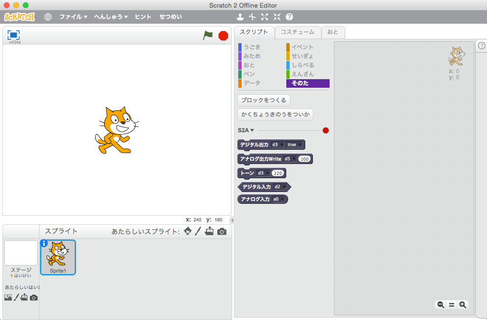
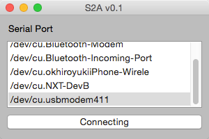

はじめに
S2Aは、Scratch2.0よりオープンハードウェアであるArduinoを簡単に操作するための拡張機能になります。Arduinoに接続したセンサーやモーターなどを制御する新しいブロックが使えるようになります。
コンテンツ
画面イメージ
Scratch2.0 オフラインエディタでのS2Aブロック (ベースブロック)
S2Aブロックは、Arduinoを基本的な動きを操作できます。
S2A.app (S2A.exe)
S2A.app (S2A.exe) は、Scratch2.0 オフラインエディタとArduinoを繋げるソフトです。
使い方
S2A.zipをダウンロードして、解凍してください。- ArduinoとPCをUSBで繋いでください。
ArduinoCode/s2a/s2a.inoをArduino IDEを使って、Arduinoにアップロードしてください。App/S2A-0.1-win32.msiをインストールしてください。（Windowsのみ）C:\Program Files(x86)\s2a.exe (windows)あるいはApp/s2a.app (Mac)を起動してください。- arduinoに繋がっているシリアルポートを選択して、接続ボタンを押してください。
Scratch 2.0 オフラインエディタを起動した状態で、メニューにある"ファイル"をシフトキーを押しながらクリックシてください。そうすると、"Import experimental HTTP extension"が表示されます。- "Import experimental HTTP extension"をクリックし、
Extensions/s2a_base.jsonを読み込んでください。 - "More Blocks" タブに、S２Aブロックができているのが確認できます。
S2Aの詳細
サポート言語
- 日本語
- 英語
サポートしているArduinoの種類
S2Aは、Arudino Unoで動作します。他のボードはテストしていませんが、Uno同様動作すると思います。
操作できる内容
S2A 基本ブロックは次のような制御が可能です。
- ６つのアナログ入力 (すべてのアナログピン)
- ６つのデジタル入力 (デジタルピン 2, 4, 7, 8, 13)
- ６つのアナログ出力 (デジタルピン 3, 5, 6, 9, 10, 11)
- ６つのデジタル出力 (デジタルピン 3, 5, 6, 9, 10, 11)
- ６つのTone関数 (デジタルピン 3, 5, 6, 9, 10, 11)
このうち、デジタル入力はすべてプルアップしています。
通信方法
S4A は、the Scratch HTTP Extensionで提供されている機能を活用しています。
S2Aの今後
独自で作成した関数を呼び出せるカスタムモードを追加したいと考えています。可能であれば、BlocklyDuinoとの連携もしていきます。